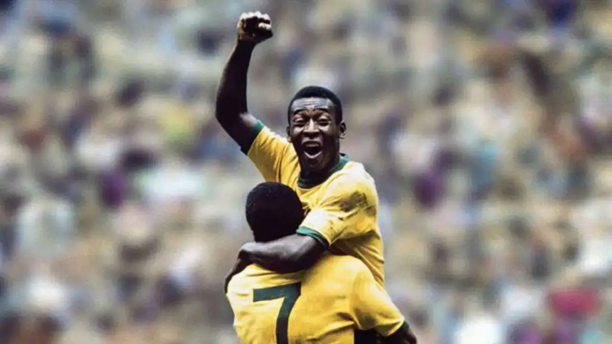

Pelé
- Naixement
- 1940
- Nacionalitat
- Brasil
- Clubs
- Santos FC · New York Cosmos
- Partits, minuts, gols i assistències
- Dades pendents d'unificar per competició i font; no es mostren totals no comparables.
- Títols individuals i col·lectius
- Vegeu el palmarès destacat; recompte total pendent de criteri uniforme.
- Palmarès destacat
- 3 Mundials (1958, 1962 i 1970)
- Rècord / fita
- La seva marca històrica són tres Copes del Món, fita única entre els futbolistes masculins.
Velocitat, intuïció i una rematada extraordinària. Combinava joc associatiu amb desequilibri individual, era perillós amb tots dos peus i dominava el joc aeri. La seva creativitat va ajudar a convertir el futbol brasiler en un referent mundial.